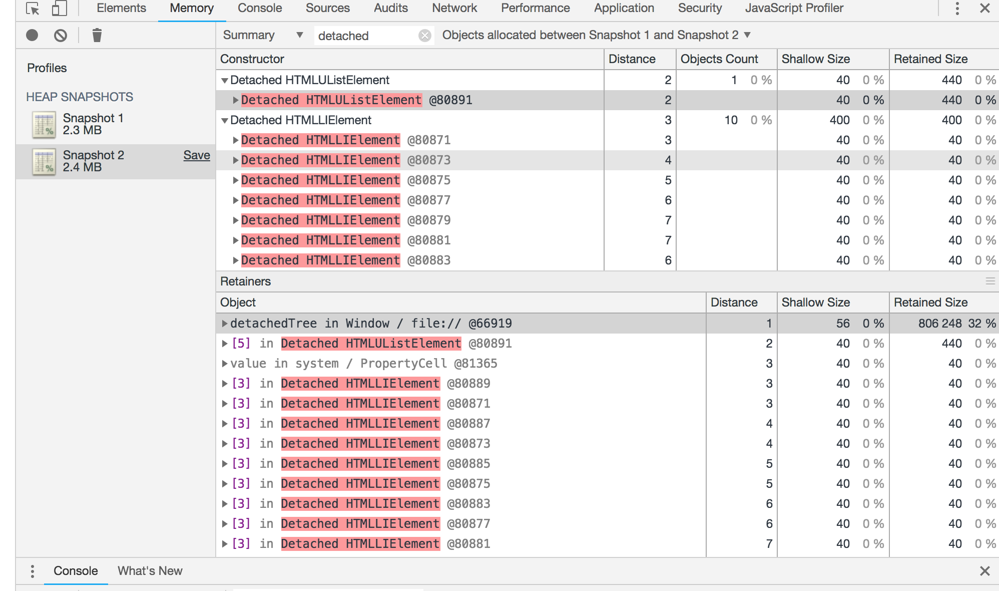
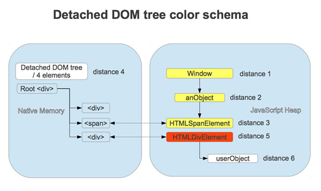
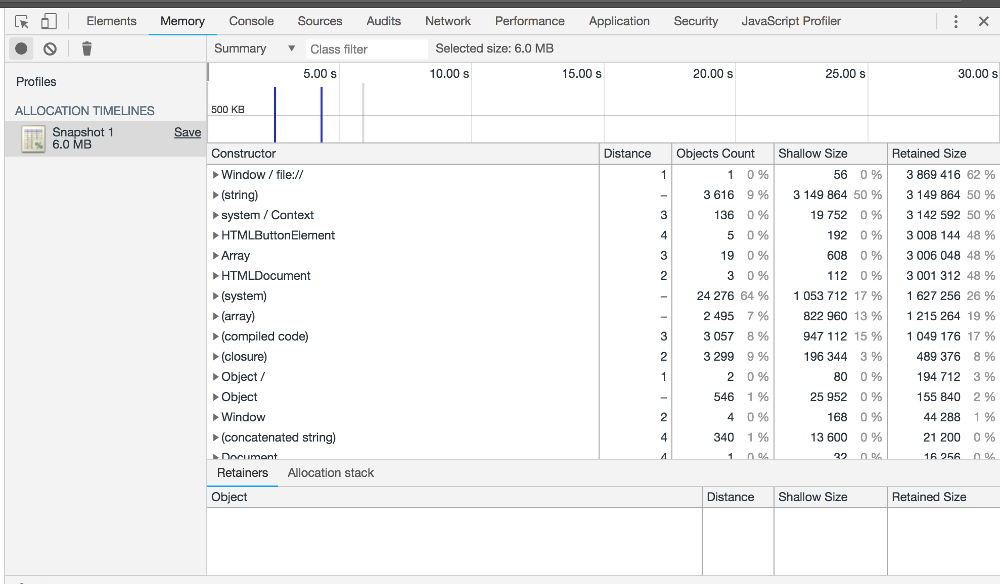
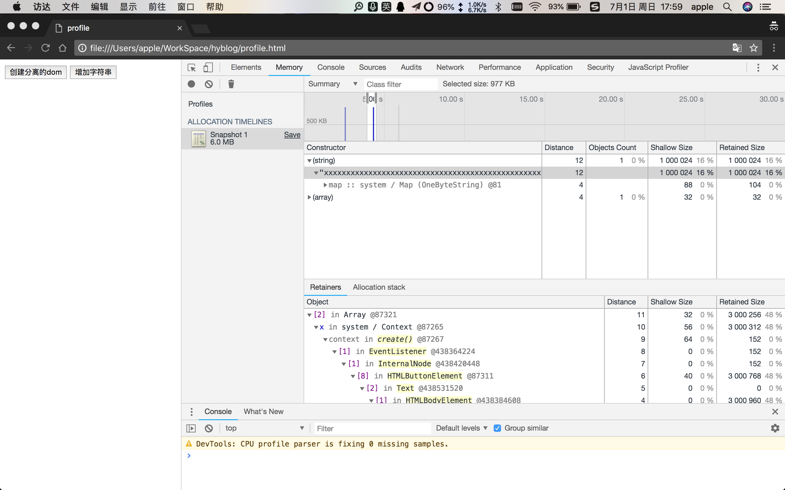

Chrome DevTools Profiler(Memory)
文章目录
本文介绍chrome devtool的Profilers(Memory)面板的使用
使用 Chrome 任务管理器实时监视内存使用
使用 Chrome 任务管理器作为内存问题调查的起点。 任务管理器是一个实时监视器，可以告诉您页面当前正在使用的内存量。
- 按 Shift+Esc 或者转到 Chrome 主菜单并选择 More tools > Task manager，打开任务管理器。
- 右键点击任务管理器的表格标题并启用 JavaScript memory。
下面两列可以告诉您与页面的内存使用有关的不同信息:
Memory 列表示原生内存。DOM 节点存储在原生内存中。 如果此值正在增大，则说明正在创建 DOM 节点。
JavaScript Memory 列表示 JS 堆。此列包含两个值。 您感兴趣的值是实时数字（括号中的数字）。 实时数字表示您的页面上的可到达对象正在使用的内存量。 如果此数字在增大，要么是正在创建新对象，要么是现有对象正在增长。
查看CPU分析
- 转到 DevTools 的 Profiles 面板。
- 选择 Collect JavaScript CPU Profile 单选按钮。
- 按 Start。
- 根据您要分析的内容不同，可以重新加载页面、与页面交互，或者只是让页面运行。
- 完成后，按 Stop 按钮。
或者使用命令行：
profile('my profile')
profileEnd('my profile)
完成记录后，DevTools 会使用记录的数据自动填充 Profile 面板。
- Heavy (Bottom Up)。此视图让您可以看到哪些函数对性能影响最大并能够检查这些函数的调用路径。
- Chart。显示记录按时间顺序排列的火焰图。
- Tree (Top Down)。显示调用结构的总体状况，从调用堆栈的顶端开始。
排除函数
要从您的 CPU 分析中排除函数，请点击以选择该函数，然后按 exclude selected function 图标 (exclude function 图标)。
已排除函数的调用方由排除函数的总时间管理。
点击 restore all functions 图标 (restore all functions 图标) 可以将所有排除的函数恢复到记录中。
火焰图分为以下两部分：
概览。整个记录的鸟瞰图。 条的高度与调用堆栈的深度相对应。 所以，栏越高，调用堆栈越深。
调用堆栈。这里可以详细深入地查看记录过程中调用的函数。 横轴是时间，纵轴是调用堆栈。 堆栈由上而下组织。所以，上面的函数调用它下面的函数，以此类推。
函数的颜色随机，与其他面板中使用的颜色无关。 不过，函数的颜色在调用过程中始终保持一致，以便您了解执行的模式。
高调用堆栈不一定很重要，只是表示调用了大量的函数。 但宽条表示调用需要很长时间完成。 这些需要优化。
在记录的特定部分上放大 在概览中点击、按住并左右拖动鼠标，可放大调用堆栈的特定部分。 缩放后，调用堆栈会自动显示您选定的记录部分。
查看函数详情
点击函数可在 Sources 面板中查看其定义。
将鼠标悬停在函数上可显示其名称和计时数据。提供的信息如下：
- Name。函数的名称。
- Self time。完成函数当前的调用所需的时间，仅包含函数本身的声明，不包含函数调用的任何函数。
- Total time。完成此函数和其调用的任何函数当前的调用所需的时间。
- URL。形式为 file.js:100 的函数定义的位置，其中 file.js 是定义函数的文件名称，100 是定义的行号。
- Aggregated self time。记录中函数所有调用的总时间，不包含此函数调用的函数。
- Aggregated total time。函数所有调用的总时间，不包含此函数调用的函数。
- Not optimized。如果分析器已检测出函数存在潜在的优化，会在此处列出。
memory面板使用
利用三次快照发现内存泄露
只有页面的 DOM 树或 JavaScript 代码不再引用 DOM 节点时，DOM 节点才会被作为垃圾进行回收。 如果某个节点已从 DOM 树移除，但某些 JavaScript 仍然引用它，我们称此节点为“已分离”。已分离的 DOM 节点是内存泄漏的常见原因。此部分将教您如何使用 DevTools 的堆分析器确定已分离的节点。
下面是一个已分离 DOM 节点的简单示例。
var detachedNodes;
function create() {
var ul = document.createElement('ul');
for (var i = 0; i < 10; i++) {
var li = document.createElement('li');
ul.appendChild(li);
}
detachedTree = ul;
}
document.getElementById('create').addEventListener('click', create);
点击代码中引用的按钮将创建一个包含 10 个 li 子级的 ul 节点。 这些节点由代码引用，但不存在于 DOM 树中，因此它们已分离。 在 Class filter 文本框中键入 Detached，搜索已分离的 DOM 树。
以黄色突出显示的节点具有 JavaScript 代码对它们的直接引用。 以红色突出显示的节点则没有直接引用。只有属于黄色节点的树时，它们才处于活动状态。 一般而言，您需要将注意力放在黄色节点上。 修复代码，使黄色节点处于活动状态的时间不长于需要的时间，您也需要消除属于黄色节点树的红色节点。
点击黄色节点对其进行进一步调查。在 Object 窗格中，您可以看到与正在引用该节点的代码相关的更多信息。 例如，在下面的屏幕截图中，您可以看到 detachedTree 变量正在引用该节点。要解决这一特定的内存泄漏，您需要研究使用 detachedTree 的代码并确保在不需要时，此代码可以移除其对节点的引用。

了解Heap 分析器中的不同节点含义
红色的节点表示仍然存在的分离DOM树的一部分，并且DOM树种的某个节点仍然在被JavaScript引用（可能是一个闭包或者某些属性, 所以整个DOM树刚好不被垃圾回收)
黄色的节点表示一个分离DOM树的引用，可能是某个对象的属性或者是一个数组元素，在元素和window之间可能存在着一条属性链（例如 window.foo.bar[2].baz）

执行步骤：
- 打开DevTools 并切换到 Profiles 面板
- 执行一个会导致内存泄露的操作
- 创建一个新的heap快照
- 重复步骤2和步骤3三次
- 选择最近的heap快照
- 下边的默认结果过滤为All Object,将其改为Objects between Snapshot 1 and 2
- 这时候你就可以看到一组未被释放的对象，选择其中一个，可以在Object’s retaining tree中查看什么导致了内存泄露。
使用分配时间线确定 JS 堆内存泄漏
分配时间线是您可以用于跟踪 JS 堆中内存泄漏的另一种工具。
要显示分配时间线，请考虑使用下面的代码：
var x = [];
function grow() {
x.push(new Array(1000000).join('x'));
}
document.getElementById('grow').addEventListener('click', grow);
每次按代码中引用的按钮时，都会向 x 数组添加一个由 100 万个字符组成的字符串。
要记录分配时间线，请打开 DevTools，然后转到 Profiles 面板，选择 Record Allocation Timeline 单选按钮，按 Start 按钮，执行您怀疑导致内存泄漏的操作。完成后，按 stop recording 按钮 (stop recording 按钮)。
记录时，请注意分配时间线上是否显示任何蓝色竖线（如下面的屏幕截图所示）。 
这些蓝色竖线表示新内存分配。新内存分配中可能存在内存泄漏。 您可以在竖线上放大，将 Constructor 窗格筛选为仅显示在指定时间范围内分配的对象。
展开对象并点击它的值，可以在 Object 窗格中查看其更多详情。 例如，在下面的屏幕截图中，通过查看新分配对象的详细信息，您可以看到它被分配到 Window 作用域中的 x 变量。 
按函数调查内存分配
使用 Record Allocation Profiler 类型可按 JavaScript 函数查看内存分配。
DevTools 按函数显示内存分配明细。默认视图为 Heavy (Bottom Up)，将分配了最多内存的函数显示在最上方。
Shallow Size(直接占用内存) & Retained Size(占用总内存)
对象在内存中存活有两种方式： 1. 直接被一个活动对象引用，比如window，document 2. 被渲染器本地的对象隐式地引用，比如说Dom objects
第二种方式会阻止对象被GC自动处理，容易造成内存泄露
通常，一个对象本身所拥有的大小被称为shallow size，数组和字符串一般拥有比较大的shallow size
一个对象如果阻止了其他对象被GC回收，删除这个对象所释放的内存(并且它的依赖项不可再被引用)，就是这个对象的retained size
四种视图的区别(Comparison, Dominator, Containment, Summary )
四个视图分别从不同角度分析快照数据
Comparison 视图
可以显示哪些对象已经被垃圾回收正确释放了。 一般在该视图中比较一次操作前后的内存快照数据。通过检查空闲内存中的变量增量和引用数来确定内存泄露的存在和原因。
Dominators 视图
用来确认对象已经没有其他未知的引用，并且垃圾回收可以正常工作。(译注：新版本Chrome中，该面板已经去掉，新增了Statistics，统计不同类型数据所占的内存)
Summary 视图
可以按照类型追踪对象及其内存使用情况，对象会以构造器名分组显示，主要用于寻找DOM内存泄露的场景。
Containment 视图
可以更清晰的了解到对象的结构，借此可以分析出在全局作用域中对该对象的引用情况(例如window)，可以用来分析闭包，以更低的层次去查看对象情况。
heap profiler 表格中constructor的类别
- global property（全局属性） - 全局对象（如’窗口’）和它引用的对象之间的中间对象。如果使用构造函数Person创建对象并且由全局对象保存，则保留路径看起来像[global]>（全局属性）> Person。这与对象直接相互引用的规范形成对比。出于性能原因，我们有中间对象。全局变量定期修改，属性访问优化对非全局对象做的很好，不适用于全局变量。
- roots（根） - 保留树视图中的根条目是具有对所选对象的引用的实体。这些也可以是引擎为自己的目的创建的引用。引擎具有引用对象的缓存，但所有这些引用都很弱，并且不会阻止收集对象，因为没有真正的强引用。
- closure（闭包） - 通过函数闭包对一组对象的引用计数
- array, string, number, regexp（数组，字符串，数字，正则表达式） - 具有引用数组，字符串，数字或正则表达式的属性的对象类型列表
- compiled code（编译代码） - 简单地说，与编译代码相关的所有内容。脚本类似于一个函数，但对应于一个
<script>主体。SharedFunctionInfos（SFI）是函数和编译代码之间的对象。函数通常有一个上下文，而SFI不。 - HTMLDivElement，HTMLAnchorElement，DocumentFragment等 - 引用元素或由您的代码引用的特定类型的文档对象。
会影响内存分析结果的外部因素
推荐在隐身模式下去使用内存分析，禁用chrome的所有拓展程序
性能监控
chrome稳定版就有了
- 打开 URL：“chrome://flags/#enable-devtools-experiments”
- 将 “Developer Tools experiments” 选项设置为“启用”
- 点击 “Relaunch now” 来重启 Chrome
- 打开 Chrome DevTools (快捷键为 CMD/CTRL + SHIFT + I)
- 打开 DevTools “Setting” -> “Experiments” 选项
- 按 6 次 SHIFT 显示隐藏的选项
- 选中 “Performance Monitor” 选项（没有该选项的话直接跳过这个步骤）
- 重启 DevTools (快捷键 CMD/CTRL + SHIFT + I )
- 点击 “Esc” 打开附加面板
- 选择 “Performance monitor”
- 单击启用/禁用
如果用的是chrome开发版，好像可以跳过6、7步骤 开始使用性能监控吧 😀
文章作者 hellohy
上次更新 2018-07-01